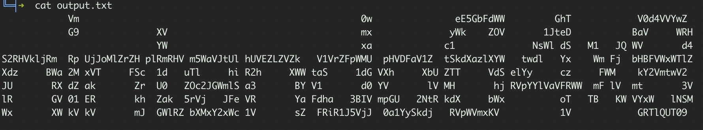

cyber apocalypse 2021 crypto challenge nintendo base64
Written: 2021/04/20
Challenge notes
Aliens are trying to cause great misery for the human race by using our own cryptographic technology to encrypt all our games.
Fortunately, the aliens haven't played CryptoHack so they're making several noob mistakes. Therefore they've given us a chance to recover our games and find their flags.
They've tried to scramble data on an N64 but don't seem to understand that encoding and ASCII art are not valid types of encryption!
The following provides us with a ZIP file download called crypto_nintendo_base64.zip. Judging by the challenge information, it sounds like we are going to have to use base64 to decrypt the message contained within the ZIP. Extracting the file we get a file called output.txt. I've taken an image to better illustrate the content:
The first thing to do is to strip away all the whitespace and new lines to get a string we can decode. I achieved thus by running the following on the output.txt file:
sed 's/ //g' output.txt | tr -d '\n'
Vm0weE5GbFdWWGhTV0d4VVYwZG9XVmxyWkZOV1JteDBaVWRHYWxac1NsWldSM1JQWVd4S2RHVkljRmRpUjJoMlZrZHplRmRHVm5WaVJtUlhUVEZLZVZkV1VrZFpWMUpHVDFaV1ZtSkdXazlXYWtwdlYxWmFjbHBFVWxWTlZXdzBWa2MxVTFSc1duTlhiR2hXWWtaS1dGVXhXbUZTTVdSelYyczFWMkY2VmtwV2JURXdZakZrU0ZOc2JGWmlSa3BYV1d0YVlVMHhjRVpYYlVaVFRWWmFlVmt3VlRGV01ERkhZak5rVjJFeVRYaFdha3BIVmpGU2NtRkdXbWxoTTBKWVYxWlNSMWxXWkVkVmJGWlRZbXMxY2xWc1VsZFRiR1J5VjJ0a1YySkdjRVpWVmxKV1VGRTlQUT09My initial solution of this issue was a bit of a manual task. I grabbed the string above and used echo to pipe it to base64 for decoding. What I got was another base64 string. This suggested to me, there may be multiple layers of encoding at hand:
echo "Vm0weE5GbFdWWGhTV0d4VVYwZG9XVmxyWkZOV1JteDBaVWRHYWxac1NsWldSM1JQWVd4S2RHVkljRmRpUjJoMlZrZHplRmRHVm5WaVJtUlhUVEZLZVZkV1VrZFpWMUpHVDFaV1ZtSkdXazlXYWtwdlYxWmFjbHBFVWxWTlZXdzBWa2MxVTFSc1duTlhiR2hXWWtaS1dGVXhXbUZTTVdSelYyczFWMkY2VmtwV2JURXdZakZrU0ZOc2JGWmlSa3BYV1d0YVlVMHhjRVpYYlVaVFRWWmFlVmt3VlRGV01ERkhZak5rVjJFeVRYaFdha3BIVmpGU2NtRkdXbWxoTTBKWVYxWlNSMWxXWkVkVmJGWlRZbXMxY2xWc1VsZFRiR1J5VjJ0a1YySkdjRVpWVmxKV1VGRTlQUT09" | base64 -d
Vm0xNFlWVXhSWGxUV0doWVlrZFNWRmx0ZUdGalZsSlZWR3RPYWxKdGVIcFdiR2h2VkdzeFdGVnViRmRXTTFKeVdWUkdZV1JGT1ZWVmJGWk9WakpvV1ZaclpEUlVNVWw0Vkc1U1RsWnNXbGhWYkZKWFUxWmFSMWRzV2s1V2F6VkpWbTEwYjFkSFNsbFZiRkpXWWtaYU0xcEZXbUZTTVZaeVkwVTFWMDFHYjNkV2EyTXhWakpHVjFScmFGWmlhM0JYV1ZSR1lWZEdVbFZTYms1clVsUldTbGRyV2tkV2JGcEZVVlJWUFE9PQ==Since this became rather repetitive, I devised a quick Python script to do the job for me:
import base64
import sys
base64_msg = "Vm0weE5GbFdWWGhTV0d4VVYwZG9XVmxyWkZOV1JteDBaVWRHYWxac1NsWldSM1JQWVd4S2RHVkljRmRpUjJoMlZrZHplRmRHVm5WaVJtUlhUVEZLZVZkV1VrZFpWMUpHVDFaV1ZtSkdXazlXYWtwdlYxWmFjbHBFVWxWTlZXdzBWa2MxVTFSc1duTlhiR2hXWWtaS1dGVXhXbUZTTVdSelYyczFWMkY2VmtwV2JURXdZakZrU0ZOc2JGWmlSa3BYV1d0YVlVMHhjRVpYYlVaVFRWWmFlVmt3VlRGV01ERkhZak5rVjJFeVRYaFdha3BIVmpGU2NtRkdXbWxoTTBKWVYxWlNSMWxXWkVkVmJGWlRZbXMxY2xWc1VsZFRiR1J5VjJ0a1YySkdjRVpWVmxKV1VGRTlQUT09%"
while True:
base64_bytes = base64_msg.encode('ascii')
message_bytes = base64.b64decode(base64_bytes)
message = message_bytes.decode('ascii')
if not message.startswith('CHTB'):
print("Current decoded message is: " + message)
base64_msg = message
continue
else:
print("The flag is: " + message)
sys.exit()The above starts off by taking the initial base64 encoded message. It then used the base64 module to decode that string. The while loop then allows us to go through each decoded message until we get to the flag, which is a result that starts with CHTB. Running the script looks like this:
python3 crypto_decode64.py
Current decoded message is: Vm0xNFlWVXhSWGxUV0doWVlrZFNWRmx0ZUdGalZsSlZWR3RPYWxKdGVIcFdiR2h2VkdzeFdGVnViRmRXTTFKeVdWUkdZV1JGT1ZWVmJGWk9WakpvV1ZaclpEUlVNVWw0Vkc1U1RsWnNXbGhWYkZKWFUxWmFSMWRzV2s1V2F6VkpWbTEwYjFkSFNsbFZiRkpXWWtaYU0xcEZXbUZTTVZaeVkwVTFWMDFHYjNkV2EyTXhWakpHVjFScmFGWmlhM0JYV1ZSR1lWZEdVbFZTYms1clVsUldTbGRyV2tkV2JGcEZVVlJWUFE9PQ==
Current decoded message is: Vm14YVUxRXlTWGhYYkdSVFlteGFjVlJVVGtOalJteHpWbGhvVGsxWFVubFdWM1JyWVRGYWRFOVVVbFZOVjJoWVZrZDRUMUl4VG5STlZsWlhVbFJXU1ZaR1dsWk5WazVJVm10b1dHSllVbFJWYkZaM1pFWmFSMVZyY0U1V01Gb3dWa2MxVjJGV1RraFZia3BXWVRGYVdGUlVSbk5rUlRWSldrWkdWbFpFUVRVPQ==
Current decoded message is: VmxaU1EySXhXbGRTYmxacVRUTkNjRmxzVlhoTk1XUnlWV3RrYTFadE9UUlVNV2hYVkd4T1IxTnRNVlZXUlRWSVZGWlZNVk5IVmtoWGJYUlRVbFZ3ZEZaR1VrcE5WMFowVkc1V2FWTkhVbkpWYTFaWFRURnNkRTVJWkZGVlZEQTU=
Current decoded message is: VlZSQ2IxWldSblZqTTNCcFlsVXhNMWRyVWtka1ZtOTRUMWhXVGxOR1NtMVVWRTVIVFZVMVNHVkhXbXRTUlVwdFZGUkpNV0Z0VG5WaVNHUnJVa1ZXTTFsdE5IZFFVVDA5
Current decoded message is: VVRCb1ZWRnVjM3BpYlUxM1drUkdkVm94T1hWTlNGSm1UVE5HTVU1SGVHWmtSRUptVFRJMWFtTnViSGRrUkVWM1ltNHdQUT09
Current decoded message is: UTBoVVFuc3pibU13WkRGdVoxOXVNSFJmTTNGMU5HeGZkREJmTTI1amNubHdkREV3Ym4wPQ==
Current decoded message is: Q0hUQnszbmMwZDFuZ19uMHRfM3F1NGxfdDBfM25jcnlwdDEwbn0=
The flag is: CHTB{3nc0d1ng_n0t_3qu4l_t0_3ncrypt10n}As we can see, the flag for this challenge is CHTB{3nc0d1ng_n0t_3qu4l_t0_3ncrypt10n}.